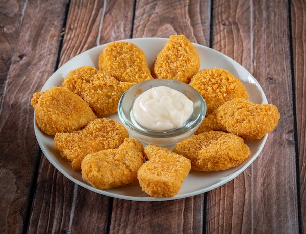
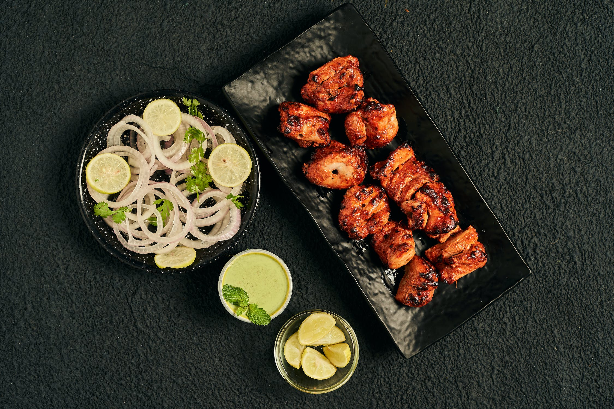
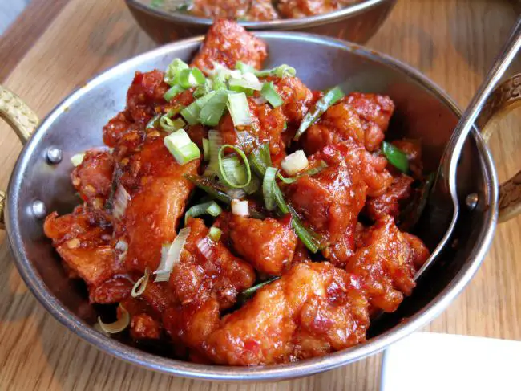
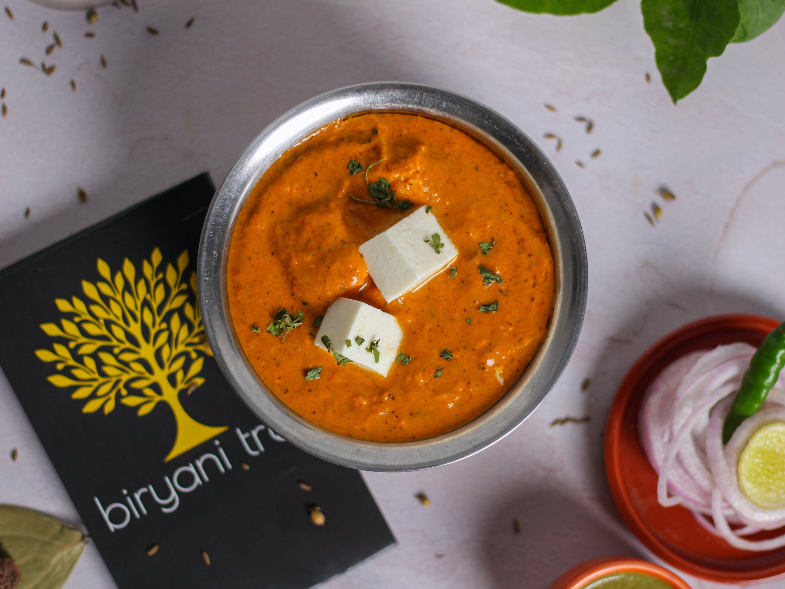
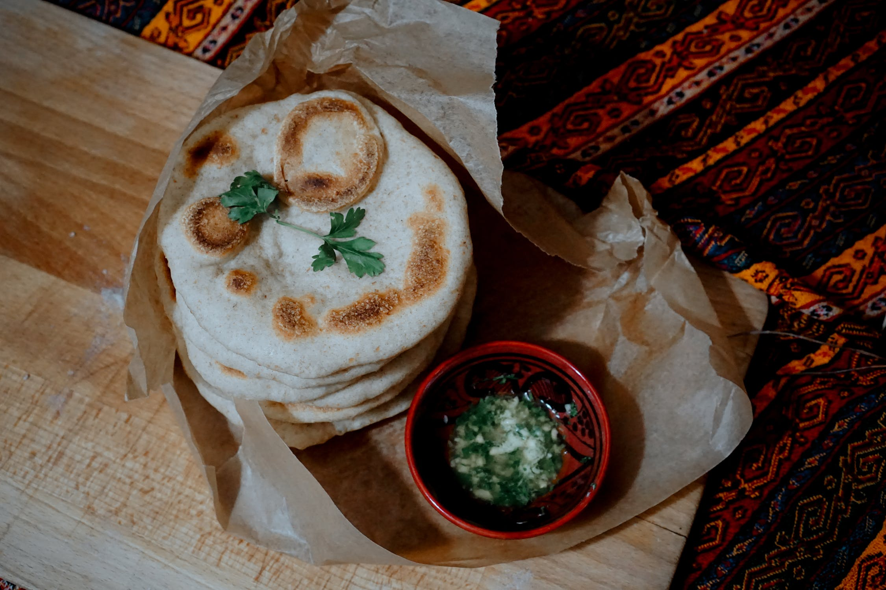
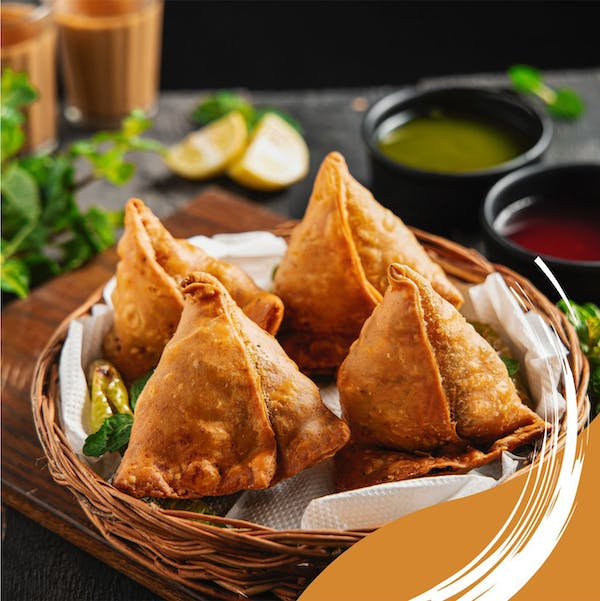
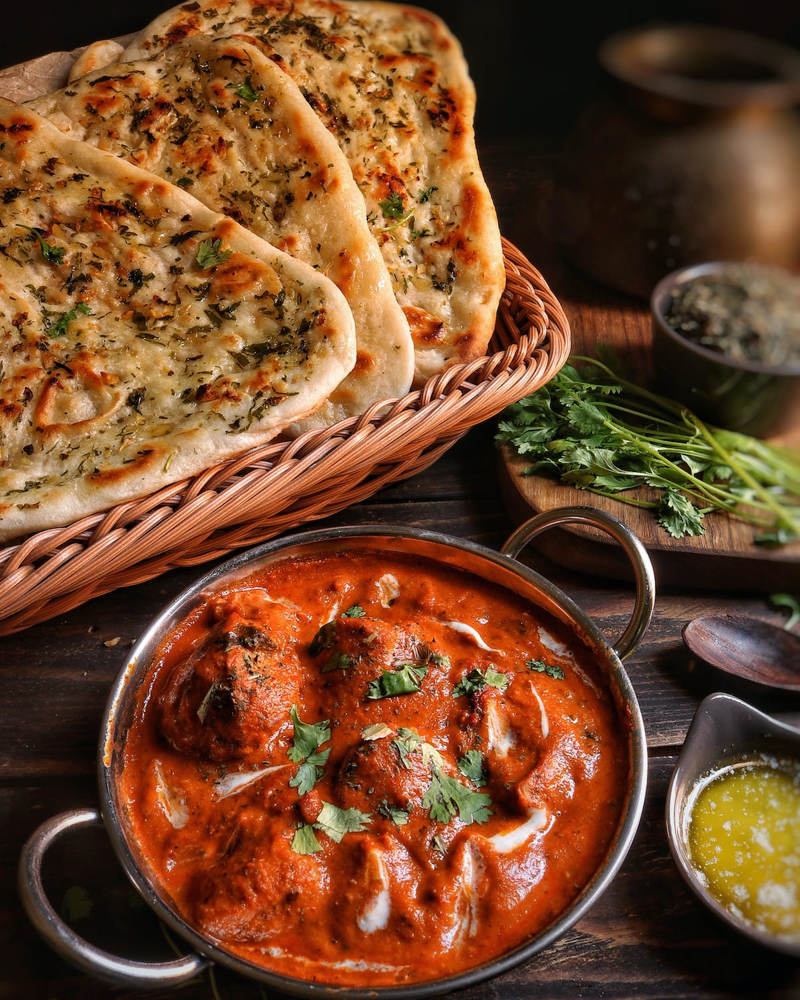
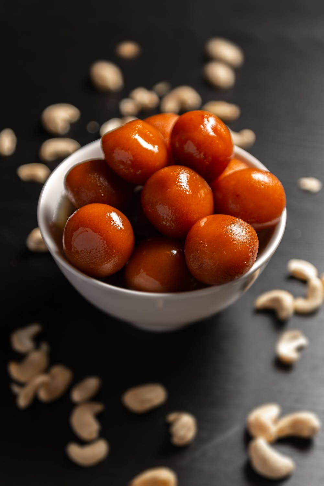
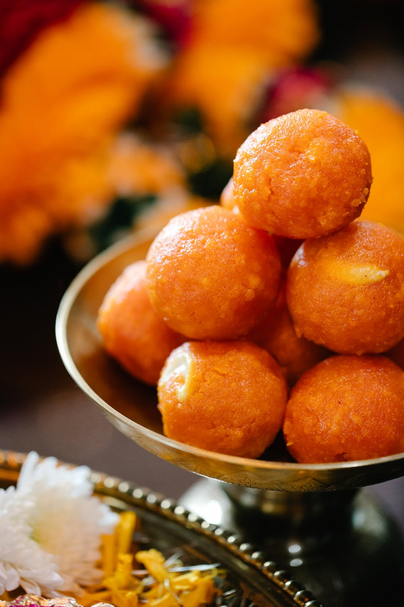

Real food doesn`t have ingredinets,real food is ingredinets.
--
Your Search Results:
Non- Veg Starters
Fried Chicken
Biryany is a mixed rice dish originating among the Muslims of South Asia. It is made with Indian spices, vegetables, rice, and usually some type of meat (chicken, beef, goat, lamb, prawn, or fish), or in some cases without any meat, and sometimes, in addition, eggs and potatoes.
Chicken kebabs
Biryany is a mixed rice dish originating among the Muslims of South Asia. It is made with Indian spices, vegetables, rice, and usually some type of meat (chicken, beef, goat, lamb, prawn, or fish), or in some cases without any meat, and sometimes, in addition, eggs and potatoes.

Chicken nuggets
Biryany is a mixed rice dish originating among the Muslims of South Asia. It is made with Indian spices, vegetables, rice, and usually some type of meat (chicken, beef, goat, lamb, prawn, or fish), or in some cases without any meat, and sometimes, in addition, eggs and potatoes.

Chicken Tikka
Biryany is a mixed rice dish originating among the Muslims of South Asia. It is made with Indian spices, vegetables, rice, and usually some type of meat (chicken, beef, goat, lamb, prawn, or fish), or in some cases without any meat, and sometimes, in addition, eggs and potatoes.
Chinese Specials
Chowmein
Biryany is a mixed rice dish originating among the Muslims of South Asia. It is made with Indian spices, vegetables, rice, and usually some type of meat (chicken, beef, goat, lamb, prawn, or fish), or in some cases without any meat, and sometimes, in addition, eggs and potatoes.

Schezuan Chicken
Biryany is a mixed rice dish originating among the Muslims of South Asia. It is made with Indian spices, vegetables, rice, and usually some type of meat (chicken, beef, goat, lamb, prawn, or fish), or in some cases without any meat, and sometimes, in addition, eggs and potatoes.
Fried Rice
Biryany is a mixed rice dish originating among the Muslims of South Asia. It is made with Indian spices, vegetables, rice, and usually some type of meat (chicken, beef, goat, lamb, prawn, or fish), or in some cases without any meat, and sometimes, in addition, eggs and potatoes.
Momo's
Biryany is a mixed rice dish originating among the Muslims of South Asia. It is made with Indian spices, vegetables, rice, and usually some type of meat (chicken, beef, goat, lamb, prawn, or fish), or in some cases without any meat, and sometimes, in addition, eggs and potatoes.
North Indian

Panner Butter Masala
Biryany is a mixed rice dish originating among the Muslims of South Asia. It is made with Indian spices, vegetables, rice, and usually some type of meat (chicken, beef, goat, lamb, prawn, or fish), or in some cases without any meat, and sometimes, in addition, eggs and potatoes.

Butter Roti
Biryany is a mixed rice dish originating among the Muslims of South Asia. It is made with Indian spices, vegetables, rice, and usually some type of meat (chicken, beef, goat, lamb, prawn, or fish), or in some cases without any meat, and sometimes, in addition, eggs and potatoes.

Samosa
Biryany is a mixed rice dish originating among the Muslims of South Asia. It is made with Indian spices, vegetables, rice, and usually some type of meat (chicken, beef, goat, lamb, prawn, or fish), or in some cases without any meat, and sometimes, in addition, eggs and potatoes.

Butter Chicken
Biryany is a mixed rice dish originating among the Muslims of South Asia. It is made with Indian spices, vegetables, rice, and usually some type of meat (chicken, beef, goat, lamb, prawn, or fish), or in some cases without any meat, and sometimes, in addition, eggs and potatoes.
South Indian

Gulab Jamun
Biryany is a mixed rice dish originating among the Muslims of South Asia. It is made with Indian spices, vegetables, rice, and usually some type of meat (chicken, beef, goat, lamb, prawn, or fish), or in some cases without any meat, and sometimes, in addition, eggs and potatoes.
Lemon Rice
Biryany is a mixed rice dish originating among the Muslims of South Asia. It is made with Indian spices, vegetables, rice, and usually some type of meat (chicken, beef, goat, lamb, prawn, or fish), or in some cases without any meat, and sometimes, in addition, eggs and potatoes.

Motitchoor Laddu
Biryany is a mixed rice dish originating among the Muslims of South Asia. It is made with Indian spices, vegetables, rice, and usually some type of meat (chicken, beef, goat, lamb, prawn, or fish), or in some cases without any meat, and sometimes, in addition, eggs and potatoes.
Mango Pickle
Biryany is a mixed rice dish originating among the Muslims of South Asia. It is made with Indian spices, vegetables, rice, and usually some type of meat (chicken, beef, goat, lamb, prawn, or fish), or in some cases without any meat, and sometimes, in addition, eggs and potatoes.